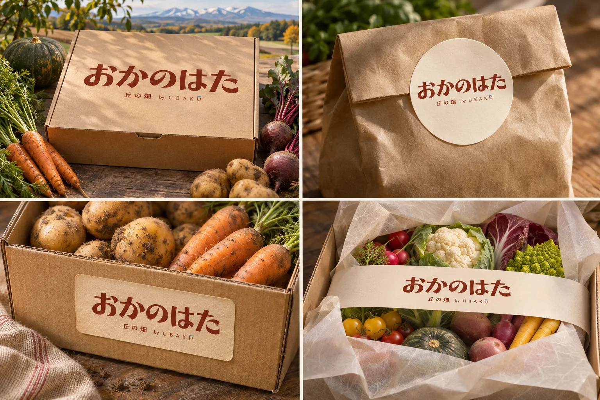
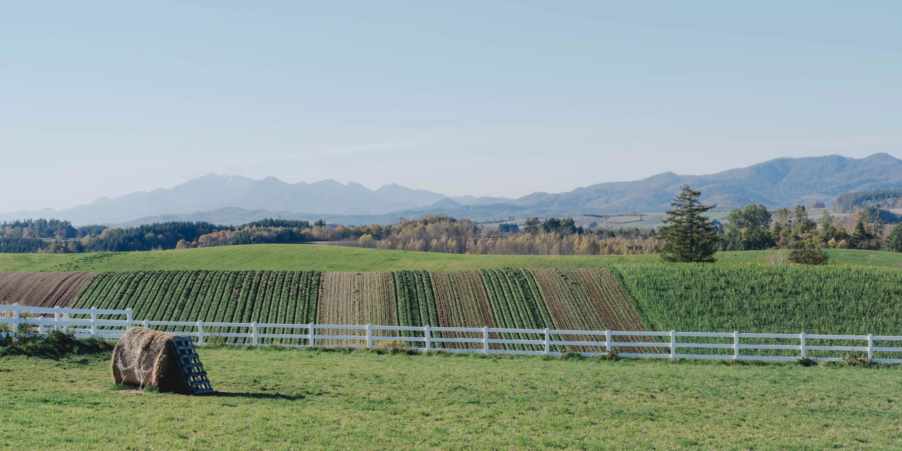
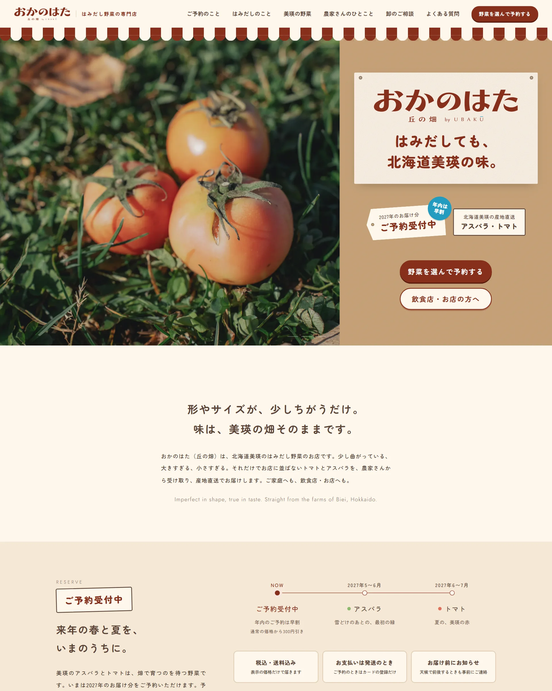

#872F1CSoil red
#239CC0Sky blue
#FEF7EDCream





Works/03
A storefront for imperfect vegetables.
The brand of Okanohata, a shop in Biei, Hokkaido, for vegetables that are a little out of shape. It ships asparagus and tomatoes straight from farmers in Biei, vegetables that never reach store shelves just because their shape or size is a little different. From the name, logo, and colors to the website, boxes, stickers, and printed items, everything was brought together in one consistent world. okanohata.jp launched in November 2026.
Can being out of shape become a reason to choose these vegetables?
At first, we built a site under the name "UBAKU Yasai," with the same look as our villa. But it did not look like a vegetable shop. So we started over from the name, and called it Okanohata (丘の畑, "fields on the hill"), after the farmland spreading over the hills of Biei. A small "by UBAKU" under the logo tells people it is one of UBAKU's businesses.
The logo uses bold, rounded letters. There are three colors: the red-brown of the soil, the blue of the Biei sky, and a natural cream. The website is put together like the front of a greengrocer, with an awning, price tags, crate labels, and round stickers. It is a shop that does not hide that its vegetables are out of shape, and says so as it is.



A little different,
just as delicious.
Differences in shape and size are normal in the field. Yet only uniform vegetables make it onto store shelves. Instead of treating "out of shape" as a weakness, we show it as what makes this shop itself. The name, the logo, and the website were all designed with that in mind.
Tell us about your
building or brand.
You want to make use of an old building, turn it into a lodging or shop, or refine how your shop presents itself. Even an idea that has not taken shape yet is welcome. We reply to English inquiries by email.
Talk to UBAKU Design →